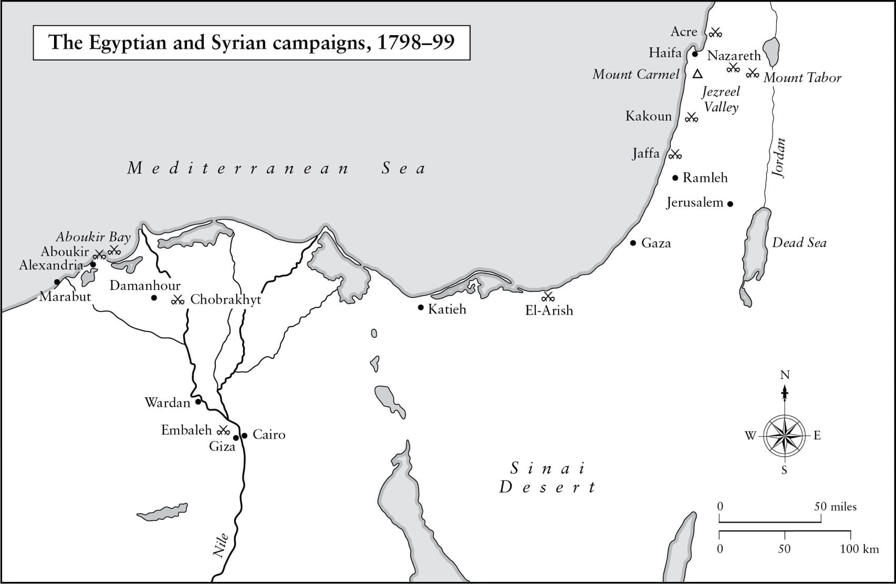

Năm nay, cuộc hành hương về Mecca không thấy diễn ra.
• Sử gia Hồi giáo khuyết danh, năm 1798
Nếu tôi ở lại phương Đông, tôi đã có thể lập nên một đế chế, giống như Alexander vậy.
• Napoleon nói với Tướng Gourgaud trên đảo St Helena
⚝ ✽ ⚝
Cho dù ý tưởng tấn công Ai Cập được nhiều nguồn khác nhau cho là của Talleyrand, Barras, Monge (dù chỉ mình ông này tự mặc nhận), nhà bách khoa thư kiêm nhà du hành Constantin de Volney và vài người khác, nhưng thực tế là các nhà lập kế hoạch quân sự Pháp đã cân nhắc tới nó từ những năm 1760 và vào năm 1782, người chú của Hoàng đế Francis là Joseph II của Áo, đã gợi ý với người em rể Louis XVI của mình về việc Pháp sáp nhập Ai Cập như một phần của một kế hoạch lớn hơn nhằm chia phần Đế quốc Ottoman. Người Thổ Ottoman đã chinh phục Ai Cập năm 1517 và về danh nghĩa vẫn đang cai trị lãnh thổ này, nhưng trên thực tế quyền kiểm soát từ lâu đã bị chiếm đoạt bởi các Mamluk, một tầng lớp quân nhân có nguồn gốc từ Georgia ở vùng Caucasus. 24 bey (thủ lĩnh quân sự) của họ không giành được cảm tình của người dân thường Ai Cập vì những loại thuế nặng nề họ áp đặt và bị coi là những kẻ ngoại bang. Sau cuộc Cách mạng, ý tưởng tấn công Ai Cập hấp dẫn cả những người Pháp mang lý tưởng cấp tiến vì nó hứa hẹn đem tự do tới cho một dân tộc bị những kẻ độc tài ngoại bang nô dịch, mà cả những chiến lược gia nhiều toan tính hơn như Carnot và Talleyrand, những người muốn đối trọng với ảnh hưởng của Anh ở phía đông Địa Trung Hải. Napoleon thuộc về nhóm sau; ông nói với Đốc chính vào tháng Tám năm 1797: “Để tiêu diệt Anh một cách triệt để, đã tới lúc chúng ta phải chiếm Ai Cập”. Talleyrand đề xuất rằng ông ta sẽ đích thân tới Constantinople(*) để thuyết phục Quốc vương Selim III đừng hăm hở chống lại cuộc viễn chinh này. Đây là lần đầu tiên, nhưng không phải là lần cuối cùng hay lần nghiêm trọng nhất ông ta lừa dối Napoleon.
Từ lúc ông được bí mật bổ nhiệm làm Tư lệnh Đạo quân Ai Cập vào ngày 5 tháng Ba năm 1798 và thời điểm đạo quân viễn chinh nhổ neo ngày 19 tháng Năm, Napoleon chỉ có chưa đến 11 tuần để tổ chức và trang bị cho toàn bộ công cuộc này, nhưng bằng cách nào đó ông cũng vẫn tìm được cách để tham dự tám buổi thuyết trình khoa học tại Tổng Hàn lâm viện Pháp quốc. Như một phần của chiến dịch tung tin đánh lạc hướng, ông nói công khai tại các phòng khách về kỳ nghỉ ông hy vọng sẽ có ở Đức với Josephine, Monge, Berthier và Marmont. Để tăng thêm sức thuyết phục cho việc đánh lạc hướng, ông chính thức được tái bổ nhiệm làm Tư lệnh Đạo quân Anh, đặt bản doanh tại Brest.
Napoleon mô tả Ai Cập như “chìa khóa địa lý mở ra thế giới”. Mục tiêu chiến lược của ông là hủy hoại thương mại của Anh trong vùng và thay thế nó bằng Pháp; ông hy vọng tối thiểu sẽ kéo giãn được Hải quân Hoàng gia Anh ra bằng cách buộc nó phải đồng thời bảo vệ các lối vào Địa Trung Hải, Hồng Hải cũng như các tuyến đường thương mại tới Ấn Độ và Mỹ. Hải quân Hoàng gia đã để mất Corse như một căn cứ vào năm 1796, sẽ còn bị kiềm chế hơn nữa nếu hạm đội Pháp có thể hoạt động từ hải cảng gần như bất khả xâm phạm của Malta. “Tại sao chúng ta không chiếm lấy đảo Malta?” ông đã viết cho Talleyrand vào tháng Chín năm 1797. “Điều đó sẽ đe dọa hơn nữa ưu thế của hải quân Anh”. Ông nói với Đốc chính rằng, “Hòn đảo nhỏ này là vô giá với chúng ta”. Ba lý do ông đưa ra cho Đốc chính để thực hiện cuộc viễn chinh là thiết lập một thuộc địa lâu dài của Pháp ở Ai Cập, mở cửa các thị trường châu Á cho sản phẩm của Pháp và thiết lập căn cứ cho một lực lượng gồm 60.000 quân để sau đó có thể tấn công các thuộc địa của Anh ở phương Đông. Tham vọng tối hậu – hay mơ tưởng – của ông có thể được xác định qua việc ông yêu cầu Bộ Chiến tranh cung cấp các bản đồ của Anh về Bengal và sông Hằng, cũng như đề nghị của ông muốn được Công dân Piveron, cựu phái viên được phái tới chỗ Tipu Sahib, “con hổ của Mysore” kẻ thù lớn nhất của Anh tại Ấn Độ, cùng đi với mình. Song Đốc chính đã làm tiêu tan những giấc mơ này; Napoleon chỉ được trao quyền tấn công Ai Cập và được đề nghị tự tìm nguồn tài chính. Ông được trông đợi trở lại Pháp sau sáu tháng.
Trên thực tế, ông đã gặp tương đối ít khó khăn trong việc huy động 8 triệu franc chi phí cho cuộc viễn chinh, thông qua các khoản “đóng góp” được Berthier ép buộc Rome, Joubert ép buộc Hà Lan và Brune ép buộc Thụy Sĩ giao nộp. Napoleon chọn lựa các sĩ quan cao cấp của mình một cách cẩn thận. Ngày 28 tháng Ba, Tướng Louis Desaix, một nhà quý tộc đã thể hiện một triển vọng lớn lao khi chiến đấu tại Đức, dẫn một nhà quý tộc khác là Tướng Louis-Nicolas Davout tới phố Victoire gặp Napoleon lần đầu tiên. Vị tướng 28 tuổi người Burgundy này không tạo được ấn tượng ban đầu tốt lắm, nhưng những lời cam đoan của Desaix rằng Davout là một sĩ quan rất có năng lực đã cho phép ông ta giành được một chỗ trong cuộc viễn chinh. Cho dù Napoleon ấn tượng với những gì Davout thể hiện ở Ai Cập, nhưng về mặt cá nhân họ không bao giờ trở nên gần gũi và đây là một hạn chế lớn của Napoleon vì sau này Davout là một trong số ít thống chế của ông tỏa sáng khi chỉ huy độc lập. Đúng như dự đoán, Napoleon chọn Berthier làm Tham mưu trưởng cho mình, chọn Louis em trai mình làm sĩ quan phụ tá sau khi cậu ta tốt nghiệp trường pháo binh Châlons, chọn Eugène – đứa con riêng tuấn tú (được đặt biệt danh “Cupid”) của vợ ông – làm sĩ quan phụ tá khác, các tướng chỉ huy sư đoàn Jean-Baptiste Kléber (một người to lớn vạm vỡ, cao hơn các binh lính còn lại của mình cả một cái đầu và là một chiến binh kỳ cựu của Đạo quân sông Rhine), Desaix, Bon, Jacques-François de Menou, Jean-Louis Reynier và 14 viên tướng khác, trong đó có Bessières và Marmont, nhiều người trong số này đã chiến đấu dưới quyền ông ở Italy.
Kỵ binh sẽ dưới quyền chỉ huy của Tướng Davy de la Pailleterie sinh ra ở Haiti, được biết tới dưới tên gọi Thomas-Alexandre Dumas, có bố là một quý tộc Pháp và mẹ là người vùng Caribbean gốc Phi, nên mang biệt danh “Schwarzer Teufel” (quỷ đen) mà quân Áo đặt cho ông ta khi ngăn họ vượt sông Adige trở lại vào tháng Một năm 1797.(*) Napoleon còn chọn Tướng Elzéar de Dommartin chỉ huy pháo binh và viên tướng một chân Louis Caffarelli du Falga chỉ huy công binh. Lannes sẽ phụ trách hậu cần, một công việc bàn giấy đáng ngạc nhiên dành cho một trong những chỉ huy kỵ binh táo bạo nhất thời đó. Bác sĩ trưởng là René-Nicolas Desgenettes, người đã viết một cuốn lịch sử của chiến dịch từ góc độ y tế bốn năm sau đó để tặng cho Napoleon. Đó là một đội ngũ sĩ quan đáng gờm, đầy ắp tài năng và hứa hẹn.
Napoleon cũng mang theo 125 cuốn sách về lịch sử, địa lý, triết học và thần thoại Hy Lạp trong một thư viện được thiết lập riêng, bao gồm ba tập Voyages (Những chuyến du hành) của Thuyền trưởng Cook, Bàn về tinh thần Pháp luật của Montesquieu, Nỗi đau của chàng Werther của Goethe và những tác phẩm của Livy, Thucydides, Plutarch, Tacitus và tất nhiên là Julius Caesar. Ông cũng mang theo những cuốn tiểu sử của Turenne, Condé, Saxe, Marlborough, Eugène xứ Savoy, Charles XII của Thụy Điển và Bertrand du Guesclin vị chỉ huy Pháp nổi tiếng trong Chiến tranh Một trăm năm. Thơ và kịch cũng có vị trí của chúng, với các tác phẩm của Ossian, Tasso, Ariosto, Homer, Virgil, Racine và Molière. Với Kinh Thánh chỉ dẫn cho ông về đức tin của Druze và người Armenia, Kinh Koran về Hồi giáo và Kinh Vệ đà về đạo Hindu, ông sẽ được cung cấp đầy đủ những lời viện dẫn thích hợp trong các bản tuyên bố dành cho dân chúng địa phương ở hầu như khắp nơi mà chiến dịch này cuối cùng sẽ đưa ông tới. Ông cũng mang theo cả tác phẩm của Herodotus vì những mô tả của tác giả này – phần lớn là kỳ lạ – về Ai Cập. (Nhiều năm sau, ông nói mình đã từng tin “Con người được hình thành do sức nóng của Mặt trời tác động lên bùn. Herodotus nói với chúng ta rằng thứ bùn nhão của sông Nile biến thành chuột và có thể nhìn thấy chúng trong quá trình hình thành”.)
Napoleon biết Alexander Đại đế đã mang theo các nhà bác học và triết gia trong các chiến dịch của ông ta ở Ai Cập, Ba Tư và Ấn Độ. Xứng đáng với tư cách một thành viên Tổng Hàn lâm viện Pháp quốc, ông dự định cuộc viễn chinh của mình sẽ là một sự kiện văn hóa và khoa học, chứ không đơn thuần là một cuộc chiến tranh chinh phục. Nhằm mục đích đó, ông mang theo 167 nhà địa lý học, thực vật học, hóa học, khảo cổ, kỹ sư, sử gia, in ấn, thiên văn học, động vật học, họa sĩ, nhạc sĩ, điêu khắc, kiến trúc sư, Đông phương học, toán học, nhà kinh tế, nhà báo, kỹ sư dân dụng và những người điều khiển khí cầu – được gọi là bác học , phần lớn họ là thành viên của ủy ban Khoa học và Nghệ thuật – ông hy vọng những gì họ làm sẽ đem đến cho chiến dịch một ý nghĩa vượt lên khuôn khổ quân sự. Ông đã thất bại trong hy vọng thuyết phục một nhà thơ chuyên nghiệp tháp tùng mình, nhưng đã chiêu mộ được Vivant Denon, tiểu thuyết gia, họa sĩ và nhà bác học 51 tuổi, người vẽ hơn 200 ký họa trong các chuyến đi của ông. Dưới quyền những người lãnh đạo Monge và Berthollet, các nhà bác học bao gồm một số người nổi danh nhất thời đó: nhà toán học và vật lý học Joseph Fourier (tác giả của Định luật Fourier về dẫn nhiệt), nhà động vật học Étienne Saint-Hilaire và nhà khoáng vật học Déodat de Dolomieu (tên ông được đặt cho khoáng chất dolomite.) Các nhà bác học không được cho biết họ sắp đi đâu, chỉ đơn giản là nền Cộng hòa cần tài năng của họ và vị trí hàn lâm của họ sẽ được bảo vệ, còn tiền lương được tăng thêm. “Các nhà bác học và trí thức cũng giống các cô nàng hay làm đỏm”, sau này Napoleon có nói với Joseph; “có thể gặp gỡ và trò chuyện với họ, nhưng đừng có lấy họ làm vợ hay dùng làm bộ trưởng của anh.”

•••
“Hỡi binh lính của Đạo quân Địa Trung Hải!” Napoleon ra tuyên bố từ Toulon ngày 10 tháng Năm năm 1798:
⚝ ✽ ⚝
Cũng trong diễn văn này, Napoleon hứa với binh lính của ông rằng mỗi người sẽ có sáu arpent(*) đất, dù không nói chính xác chúng sẽ nằm ở đâu. Denon sau này nhớ lại, khi những người lính trông thấy các đồi cát khô cằn của Ai Cập từ trên những chiếc tàu trước khi họ đổ bộ, họ đã đùa với nhau: “Sáu arpent người ta đã hứa với các anh kia kìa!”
Napoleon chuẩn bị cho hành động quân sự đầu tiên của Pháp ở Trung Đông kể từ thời Thập tự chinh với khả năng bao quát từng chi tiết thường thấy. Bên cạnh tất cả trang bị quân sự cần thiết cho đạo quân của mình, ông còn thu thập các kính thiên văn, trang bị cho khinh khí cầu, thiết bị thí nghiệm hóa học và một bộ thiết bị in với các bộ chữ cái Latin, Ả rập và Syriac. “Ông biết chúng ta sẽ cần nhiều rượu vang ngon đến thế nào”, ông viết cho Monge, bảo ông này mua 4.800 chai, phần lớn là loại vang đỏ burgundy ông ưa thích và cũng tìm cả “một ca sĩ Italy tốt”. (Tổng cộng, lực lượng viễn chinh đã mang 800.000 pint(*) rượu vang tới Ai Cập.) Danh tiếng của Napoleon lúc này đã đủ để vượt qua phần lớn các khó khăn về cung ứng. François Bernoyer, người được ông chỉ định cung cấp trang phục cho đạo quân, bắt tay vào thuê thợ may và thợ làm yên cương, đã ghi lại rằng: “Khi tôi nói với họ rằng Bonaparte sẽ chỉ huy cuộc viễn chinh, mọi trở ngại đều biến mất.”
Hạm đội của Napoleon rời Toulon đi Alexandria trong tiết trời đẹp vào thứ Bảy, ngày 19 tháng Năm năm 1798 và được hội quân với các hải đội từ Marseilles, Corse, Genoa và Civitavecchia. Đó là hạm đội lớn nhất từng giương buồm trên Địa Trung Hải. Tất cả có 280 tàu, trong đó có 13 chiến hạm chủ lực mang từ 74 đến 118 pháo (trong đó kỳ hạm L’Orient của Phó Đô đốc François Brueys là chiến hạm lớn nhất thời đó.) Napoleon đã tập hợp 38.000 bộ binh, 13.000 thủy thủ và lính thủy, 3.000 thủy thủ thương mại. Đạo quân của ông phần nào hơi nặng trên đỉnh vì bao gồm 2.200 sĩ quan, tương đương tỉ lệ 1:17 so với tỉ lệ 1:25 thường gặp hơn – một dấu hiệu cho thấy có nhiều thanh niên đầy tham vọng muốn được tham chiến dưới quyền ông. “Hãy chuẩn bị cho tôi một cái giường tốt”, Napoleon – một thủy thủ tồi – nói với Brueys trước khi khởi hành, “như thể cho một người sẽ bị ốm trong suốt chuyến đi.”
Hạm đội khổng lồ này thật may mắn đã vượt qua được Địa Trung Hải mà không bị tấn công bởi Nelson, người đang tìm kiếm Napoleon với 13 chiến hạm chủ lực. Hạm đội của Nelson đã bị một cơn bão làm phân tán về phía Sardinia trong buổi tối trước hôm Napoleon ra khơi và trong đêm 22 tháng Sáu, hai hạm đội đã cắt ngang đường nhau chỉ cách có 32 km trong sương mù. Nelson đã đoán rất chính xác rằng, Napoleon đang hướng tới Ai Cập, nhưng lại tới Alexandria ngày 29 tháng Sáu và rời đi ngày 30, một ngày trước khi quân Pháp tới. Thoát khỏi Nelson ba lần quả là chuyện phi thường; lần thứ tư họ sẽ không còn được may mắn thế nữa.
Napoleon đã yêu cầu các nhà bác học giảng bài cho các sĩ quan của ông trên boong tàu trong cả chuyến đi; trong một buổi học như thế, Junot đã ngáy to tới mức Napoleon phải đánh thức ông này dậy và nhắc khéo. Sau đó, qua thủ thư ông phát hiện ra các sĩ quan cao cấp của mình hầu hết đọc tiểu thuyết. (Họ đã bắt đầu đánh bạc, cho tới khi “tiền của mọi người nhanh chóng tìm đến, vài cái túi và không bao giờ chui ra nữa”.) Ông tuyên bố rằng tiểu thuyết là “dành cho những cô hầu gái của các quý bà” và ra lệnh cho thủ thư, “Chỉ cung cấp cho họ sách lịch sử. Đàn ông không nên đọc gì khác”. Ông có vẻ đã bỏ qua 40 cuốn tiểu thuyết, trong đó có tiểu thuyết Anh dịch ra tiếng Pháp mà chính ông đã mang theo.
Ngày 10 tháng Sáu, hạm đội tới Malta, hòn đảo án ngữ lối vào phía đông Địa Trung Hải. Napoleon cử Junot tới ra lệnh cho Đại Trưởng giáo của Dòng Hiệp sĩ St John là Ferdinand von Hompesch zu Bolheim mở cảng Valletta và đầu hàng. Khi ông ta đã làm vậy hai ngày sau đó, Caffarelli nói cho Napoleon biết họ đã may mắn đến mức nào, vì nếu không “đạo quân đã chẳng bao giờ vào được”. Malta đã từng sống sót qua những cuộc vây hãm trước đây – nhất là năm 1565, khi người Thổ bắn 130.000 quả đạn pháo vào Valletta trong bốn tháng – và sẽ còn làm điều đó trong suốt 30 tháng hồi thế chiến Thứ hai, nhưng vào năm 1798 Dòng Hiệp sĩ bị chia rẽ – những hiệp sĩ thân Pháp từ chối chiến đấu và các cư dân Malta dưới quyền cai quản của họ liền nổi dậy.
Trong sáu ngày lưu lại Malta, Napoleon trục xuất tất cả các hiệp sĩ trừ 14 người và thay thế hệ thống hành chính kiểu trung cổ của hòn đảo bằng một hội đồng chính quyền; giải thể các tu viện; thiết lập hệ thống chiếu sáng đường phố và lát vỉa hè; trả tự do cho tất cả tù chính trị; lắp đặt các vòi nước và cải tạo các bệnh viện, dịch vụ bưu chính và trường đại học, nơi giờ đây dạy khoa học cũng như các môn nhân văn. Ông cử Monge và Berthollet đi tước đoạt các ngân khố, xưởng đúc tiền, nhà thờ và tác phẩm nghệ thuật (nhưng họ đã bỏ sót những cánh cổng bạc của nhà thờ St John, vì chúng đã được sơn đen một cách khôn ngoan.) Ngày 18 tháng Sáu, ông viết 14 chỉ thị về tổ chức quân sự, hàng hải, hành chính, tư pháp, thuế quan, lợi tức thu tô và những sắp xếp về trật tự trị an cho hòn đảo trong tương lai. Trong các văn bản này ông bãi bỏ chế độ nô lệ, chế phục, chế độ phong kiến, các tước hiệu quý tộc và biểu tượng của Dòng Hiệp sĩ. Ông cho phép người Do Thái được xây một thánh đường vốn vẫn bị cấm cho tới lúc đó, thậm chí còn ghi rõ cả việc mỗi giáo sư tại trường đại học cần được trả bao nhiêu tiền, ra lệnh cho các thủ thư ở đó cũng phải giảng môn địa lý để lĩnh khoản lương 1.000 franc mỗi năm. “Giờ đây chúng ta sở hữu”, ông tuyên bố với Đốc chính, “nơi mạnh nhất ở châu Âu và sẽ phải rất khó khăn để đánh bật chúng ta ra”. Ông để hòn đảo lại dưới sự lãnh đạo của người đồng minh chính trị với mình, Michel Regnaud de Saint-Jean d’Angely, người cũng là một biên tập viên của tờ Journal de Paris trong thời Cách mạng và từng là nhà quản lý hàng hải tại hải cảng Pháp ở Rochefort.
Trên đường từ Malta tới Ai Cập, Napoleon viết các Mệnh lệnh Chung về cách quân đội cần xử sự khi đổ bộ lên bờ. Phải niêm phong các kho tàng công cùng nhà riêng và nhiệm sở của những người thu thuế; bắt giữ các Mamluk, trưng thu ngựa và lạc đà của họ; tước vũ khí tất cả các thành phố và làng mạc. “Mọi binh lính xâm phạm vào nhà riêng của dân cư để trộm ngựa hay lạc đà sẽ bị trừng phạt”, ông chỉ thị. Ông đặc biệt cẩn thận để không tạo cớ cho một cuộc thánh chiến. “Không được mâu thuẫn với họ”, ông ra lệnh cho binh lính của mình về vấn đề người Hồi giáo. “Hãy cư xử với họ như chúng ta cư xử với người Do Thái và người Italy. Hãy tôn trọng các giáo sĩ(*) và thầy tế(*) của họ như các bạn đã tôn trọng các thầy giảng(*) và giám mục… Các quân đoàn Rome bảo vệ mọi tôn giáo… Người dân ở đây đối xử với vợ mình khác chúng ta, nhưng ở mọi quốc gia gã đàn ông nào thực hiện hành động hiếp dâm cũng là một con quái vật”. Ông thêm rằng, thành phố đầu tiên mà họ sẽ tiến vào đã được Alexander Đại đế thành lập, một điều có nhiều ý nghĩa với ông hơn là với họ.
Vào Chủ nhật, ngày 1 tháng Bảy, hạm đội tới ngoài khơi Alexandria và Napoleon đổ bộ lên bãi biển Marabut cách đó gần 13 km lúc 11 giờ đêm. Ông chiếm Alexandria sáng hôm sau bằng tập kích, binh lính dưới quyền Menou vượt qua các bức tường một cách dễ dàng. “Chúng tôi bắt đầu bằng việc tổ chức một cuộc tấn công vào một nơi [Alexandria] không hề có bất cứ hệ thống phòng thủ nào”, Tướng Pierre Boyer, Quản trị trưởng của đạo quân, viết về cho bạn mình là Tướng Kilmaine ở Pháp, “và được bảo vệ bởi khoảng 500 lính Janissary [lính Mamluk tinh nhuệ], trong số này gần như chẳng tay nào biết cách giơ một khẩu súng hỏa mai lên là thế nào… Dẫu vậy chúng tôi vẫn mất 150 người mà đáng lẽ chúng tôi đã có thể giữ được chỉ bằng cách kêu gọi thành phố [đầu hàng], nhưng việc bắt đầu bằng cách gây kinh hoàng cho kẻ thù được cho là cần thiết”. Napoleon cho chôn cất tử sĩ dưới Cột trụ Pompey bằng đá hoa cương và khắc tên họ lên các mặt của nó.(*)
•••
Napoleon lưu lại Alexandria một tuần, giám sát việc đổ bộ đạo quân của ông, tước vũ khí dân chúng địa phương (ngoại trừ các thầy tế, giáo sĩ và tù trưởng(*) ), liên hệ với các thương nhân Pháp ở Ai Cập, đánh chiếm Rosetta ở gần đó, thiết lập một lazaretto (bệnh viện để điều trị dịch) và viết một lá thư chống lại lực lượng Mamluk gửi viên Tổng trấn Thổ ở Cairo – “Ngài biết rằng Pháp là đồng minh duy nhất mà Quốc vương có ở châu Âu” – cũng như đưa ra những bản thông cáo trên báo in. Một thông cáo như thế, ghi thời gian “tháng Muharrem, Năm của Hegira 1213”, nói về lực lượng Mamluk:
⚝ ✽ ⚝
Napoleon không ngại viện đến thánh thần – thậm chí còn có vẻ đứng về phía người Hồi giáo chống lại Giáo hoàng – nếu điều đó sẽ giúp ích cho mục đích của ông và giành được thiện cảm của dân chúng. Có khả năng ông đã nhắc tới mối liên minh Pháp – Ottoman năm 1536 giữa François I và Quốc vương Suleiman Huy hoàng, sau đó hỏi đầy chất tu từ: “Chẳng phải trong nhiều thế kỷ chúng tôi đã là những người bạn của Đại Thống lĩnh (mong Chúa hoàn thành những ý nguyện của người!) và là kẻ thù của những kẻ thù của ngài?” Việc đọc của ông đã giúp ích cho ông và trong bản thông cáo này, ông đã mượn lại âm điệu và phong cách của Koran.
Để hạm đội neo lại trong vịnh Aboukir với lệnh thả neo đủ sát bờ để được bảo vệ khỏi bị tấn công, Napoleon lên đường tới Cairo lúc 5 giờ chiều ngày 7 tháng Bảy, hành quân suốt đêm dưới ánh trăng. Đây là lần đầu tiên một đạo quân phương Tây hiện đại vượt qua sa mạc. Họ tới thành phố Damanhour, điểm dừng chân đầu tiên trên tuyến đường dài hơn 240 km tới Cairo, lúc 8 giờ sáng hôm sau. Sau đó, binh lính của ông hành quân cả ngày, điều khiến họ căm ghét vì cái nóng, cái khát cháy cổ, ruồi, muỗi, rắn, bọ cạp, những cơn bão cát quay cuồng, và những toán quân Mamluk thù nghịch cùng những thổ dân Bedouin Ả rập cưỡi ngựa rình rập quanh sườn họ, sẵn sàng giết những người lạc đội hình. Nhiều giếng và bể chứa nước dọc dường đã bị đầu độc hoặc lấp đất đá. Berthier nhớ lại, nước được bán với trọng lượng tương đương, vàng trong cuộc hành quân đó. Một vấn đề đặc biệt nữa là bệnh mắt hột (hay bệnh viêm mắt “Ai Cập”) do ánh Mặt trời thiêu đốt gây ra tình trạng tấy đỏ bên trong mi mắt, khiến cho ít nhất 200 người bị mù. Viên sĩ quan pháo binh trẻ tuổi, Trung úy Jean-Pierre Doguereau không bao giờ quên việc di chuyển đại bác nặng nhọc đến thế nào trên cát lún, nơi chúng có thể chìm xuống tới tận trục bánh. “Này Tướng quân, ngài định đưa chúng tôi tới Ấn Độ như thế này ư?” một người lính gào lên với Napoleon, chỉ để nhận được câu trả lời: “Không, tôi sẽ không thể làm được điều đó với những người lính như anh!”
Tinh thần bị sa sút trên sa mạc. “Thật khó mô tả được sự chán ghét, sự bất bình, sự buồn phiền, sự thất vọng của đạo quân đó, khi lần đầu tiên đặt chân lên Ai Cập”, sử gia đương thời Antoine-Vincent Arnault viết. Napoleon thậm chí còn thấy hai người lính long kỵ chạy ra khỏi hàng và gieo mình xuống sông Nile. Đại úy Henri Bertrand, một kỹ sư công binh tài năng sẽ trở thành đại tá trong chiến dịch này, thấy những tướng lĩnh danh tiếng như Murat và Lannes “ném những chiếc mũ có viền trang trí của họ xuống cát và dẫm lên chúng”. Phàn nàn chủ yếu của binh lính là trong suốt 17 ngày hành quân từ Alexandria tới Cairo không hề có bánh mì “hay một giọt rượu vang” và như Boyer nói với Kilmaine, “Chúng tôi phải hạ cấp sống bằng dưa, bí, thịt gà, thịt trâu và nước sông Nile.”
Vào 8 giờ sáng 13 tháng Bảy, quân Mamluk tấn công trại của Napoleon tại Chobrakhyt (còn được gọi là Chebreis) bên bờ sông. Murad Bey, một người Circassia cao lớn, mặt sẹo đã cùng cai trị Ai Cập nhiều năm với Ibrahim Bey, tấn công với khoảng 4.000 người. Napoleon thiết lập các đội hình vuông, với kỵ binh và hành lý ở bên trong, khiến quân Mamluk chỉ lượn quanh trên lưng ngựa. Trông họ thật huy hoàng trong những bộ trang phục đầy màu sắc, áo giáp kiểu trung cổ và cưỡi những con ngựa đẹp, song Boyer không hề ấn tượng với cách họ “luẩn quẩn vòng đi vòng lại quanh đạo quân của chúng tôi, như một đàn gia súc vậy; lúc phi nước đại, lúc rảo nước kiệu thành từng nhóm 10, 50, 100 người, v.v. Sau một lúc, họ thử xông vào tấn công chúng tôi, vài lần theo một cách cũng lố bịch và kỳ cục tương tự. Sulkowski là phụ tá của Napoleon cũng sử dụng cùng cách diễn đạt, nói rằng “đó chỉ là sự lố bịch để chống lại một đạo quân có kỷ luật”. Được trang bị với lao, rìu (đôi khi họ dùng để ném đi), loan đao, cung tên và hỏa khí cổ lỗ, quân Mamluk không phải là đối thủ cho những loạt đạn của xạ thủ hỏa mai được huấn luyện. Khi bị mất khoảng 300 người, Murad tháo lui. Đó là một cuộc chạm trán hữu ích cho Napoleon, cho ông một cơ hội thực hành những chiến thuật mà sau này được ông sử dụng hiệu quả. Ông nói với Đốc chính về “một kiểu chiến tranh mới, đòi hỏi nhiều kiên nhẫn so với tính cách dữ dội quen thuộc của người Pháp”, thứ chiến tranh dựa vào sự vững vàng trong phòng ngự. Cuộc chạm trán không hề làm sứt mẻ sự ngạo mạn của quân Mamluk. “Cứ để lũ người Frank tới”, một viên thống đốc, có thể chính là Murad, nói, “chúng ta sẽ xéo nát chúng dưới móng ngựa của chúng ta”. (Một phiên bản khác là: “Tôi sẽ phi ngựa xuyên qua chúng và chém lìa đầu chúng khỏi thân như những quả dưa hấu”.)
•••
Ngày 19 tháng Bảy, khi họ đang ở Wardan trên đường tới Cairo, Junot xác nhận điều Napoleon có thể đã nghi ngờ: rằng Josephine đã có một mối quan hệ với Hippolyte Charles. (Cho dù Joseph Bonaparte từ lâu đã biết chuyện, nhưng ông ta dường như chưa nói cho em trai vào thời điểm họ tra vấn bà về vụ gian lận.) Junot giờ đây cho Napoleon xem bằng chứng là một lá thư – ta không biết ai đã có được nó, họ cũng chưa nhận được thư từ gì từ khi đổ bộ – và nói thêm rằng chuyện bị cắm sừng của ông đang là chủ đề bàn tán ở Paris. Tại sao Junot lại chọn đúng thời điểm và địa điểm đặc biệt đó để nói ra sự thật với Napoleon là một bí ẩn. Charles đã đùa cợt ông, dùng keo dính chặt thanh kiếm của ông vào bao, song chuyện đó đã diễn ra từ những tháng trước.
“Em có rất, rất nhiều phiền muộn gia đình, khi giờ đây tấm màn đã được vén lên hoàn toàn”, Napoleon viết cho Joseph sáu ngày sau đó. “Chỉ có anh vẫn còn đó với em trên Trái đất này. Tình thân của anh rất quý giá với em: chỉ cần em mất nốt nó và thấy anh phản bội em là đủ để em trở thành một kẻ chán đời… tình cảnh đáng buồn của em là đã dồn hết tình cảm cho chỉ một con người đó trong trái tim cô đơn này. Anh hiểu em chứ!” Lá thư này – làm gợi lại những phần trong lá thư cuối cùng của Clisson viết cho Eugénie – bị Hải quân Hoàng gia Anh đoạt được trên đường tới Pháp. Một phần lá thư được công bố, nhưng không đủ để làm rõ Napoleon đang ám chỉ điều gì.
Bourrienne cho biết Napoleon dự định ly hôn Josephine khi quay về Pháp. Napoleon lại viết cho Joseph để nói, “Làm ơn cố thu xếp một nơi ở tại vùng nông thôn cho em khi em về, không gần Paris hay Burgundy, em dự định náu mình ở đó trong mùa đông. Em đã quá mệt mỏi với bản chất con người! Em cần sự yên tĩnh và cô độc, sự vĩ đại đã làm hại em; cảm xúc của em đã khô kiệt”. Không lá thư nào Napoleon gửi Josephine trong chiến dịch Ai Cập còn lưu lại được, điều mà một số sử gia lý giải là do chúng đã thất lạc hoặc bị hủy đi, song một lời giải thích có lý hơn là đơn giản ông đã chẳng viết lá thư nào. Lá thư tiếp theo còn lưu lại đề ngày 11 tháng Năm năm 1800 vào thời điểm này ông gọi bà một cách bình thản hơn “bạn tốt của tôi.”
Trong sự bối rối dễ hiểu của Napoleon, chính quyền Anh hằng năm xuất bản những tập thư từ chặn bắt được, bao gồm các năm 1798, 1799 và 1800. Để nhấn mạnh cái mà các biên tập viên hân hoan gọi là “những nỗi khốn khổ và thất vọng” trong đạo quân của ông, họ đã in lại những lá thư được gửi đi từ chính Napoleon, Louis Bonaparte, Tallien, Bourrienne, Desgenettes, Menou, Boyer, Dumas, Brueys và Lasalle, cùng nhiều người khác. (Lasalle, có lẽ là người lính khinh kỵ táo bạo nhất của đạo quân, viết cho mẹ mình phàn nàn là tóc của ông ta bị rụng vì “con hoàn toàn không có bột và sáp thơm bôi tóc”.) Viết thư cho bạn bè, gia đình và tình nhân của mình, họ đều chân thành, và trừ Napoleon, đều nhất loạt muốn quay về nhà sớm nhất có thể, rời khỏi một đất nước mà một số người mô tả là “đầy dịch bệnh”. Bộ sưu tập gồm cả những lá thư Napoleon gửi Joseph phàn nàn về sự phóng đãng của Josephine – cho dù khó có thể coi đó là bí mật quốc gia – và từ Eugène gửi Josephine “bày tỏ hy vọng của anh ta rằng người mẹ yêu quý của mình không xấu xa đến mức như bà ấy được mô tả!” Chuẩn đô đốc Jean-Baptiste Perrée, chỉ huy hải đội sông Nile, viết cho một người bạn: “Các thống đốc đã để lại cho chúng tôi, vài thiếu nữ Armenia và Georgia xinh đẹp, được chúng tôi thu giữ vì lợi ích quốc gia.”
•••
Ngày 21 tháng Bảy, Murad Bey lại xuất hiện tại thành phố Embaleh bên bờ trái sông Nile, lần này với 6.000 quân Mamluk và 54.000 chiến binh Ả rập phi chính quy, nhiều người trong số họ cưỡi ngựa. Kim tự tháp Lớn của Cheops tại Giza, công trình cao nhất thế giới cho tới tận thế kỷ 20, có thể thấy rõ cách đó 14 km, được Napoleon nhắc tới trong bản Nhật lệnh trước trận đánh: “Hỡi các binh lính! Các bạn đã tới đất nước này để giải cứu cư dân của nó khỏi sự man rợ, để mang văn minh tới phương Đông và giành lại mảnh đất xinh đẹp này của thế giới từ sự đô hộ của Anh. Từ trên đỉnh các kim tự tháp kia, 40 thế kỷ đang dõi theo các bạn”.(*) Napoleon sau đó thường nói rằng “trong tất cả những vật đã gây ấn tượng với ông trong đời, các kim tự tháp Ai Cập và kích thước của người khổng lồ Frion [người đàn ông cao nhất tại Pháp] là những thứ khiến ông kinh ngạc nhất”. Hoàn toàn ngoa ngôn khi nhắc tới Anh, quốc gia không hề có bất cứ kế hoạch nào can thiệp vào công việc của Ai Cập hay hưởng lợi theo bất cứ cách thức nào từ Ai Cập, song có thể đoán là nó được tiếp thu tích cực từ phía binh lính.
Napoleon bố trí 20.000 quân của ông thành năm đội hình vuông cỡ sư đoàn với pháo binh bố trí ở mỗi góc và hành lý, kỵ binh cùng các nhà bác học ở bên trong. Binh lính đã giải tỏa cơn khát của mình ở những cánh đồng dưa hấu và đã sẵn sàng. Họ biết nếu họ chĩa lưỡi lê vào đầu ngựa của quân Mamluk, thì nói theo lời của một sĩ quan, “lũ ngựa sẽ chổng chân sau lên, hất ngã kỵ sĩ trên lưng chúng”. Quân Mamluk tấn công các sư đoàn của Desaix và Reynier trước tiên, mà theo lời Boyer thì các đơn vị này “đã đón chúng với sự bình tĩnh và từ khoảng cách chỉ chục bước liền nổ súng vào chúng… Sau đó, chúng tấn công sư đoàn của Bon, đơn vị này đón tiếp chúng theo cùng cách. Tóm lại, sau vài nỗ lực bất thành, chúng rút lui”. Trận chiến Các Kim tự tháp kết thúc sau hai tiếng. Sĩ quan phụ tá Jean-Pierre Doguereau của Dommartin còn giữ được một cuốn nhật ký về chiến dịch, trong đó anh ta nhớ lại rằng nhiều lính Mamluk “gieo mình xuống sông Nile; làn đạn tiếp tục bắn vào hàng ngàn cái đầu nhô lên trên mặt nước một hồi lâu; tất cả đại bác của chúng đều bị chúng tôi chiếm. Tổn thất của kẻ thù là đáng kể.”
Nhiều trong số 300 thương vong của Pháp là do bị dính đạn của quân nhà giữa các đội hình vuông chứ không phải do quân Mamluk, phía bị mất 20 đại bác, 400 lạc đà và toàn bộ trang bị, hành lý. Vì theo truyền thống quân Mamluk mang theo toàn bộ tiền dành dụm của họ ra trận, nên chỉ một xác chết đã có thể giúp một người lính phát tài. Sau trận chiến, những người Pháp chiến thắng đong những đồng tiền, vàng bằng từng mũ đầy. “Những người lính dũng cảm của chúng ta đã được bù đắp hào phóng cho những khó khăn họ đã trải qua”, đó là cách Berthier trình bày trong báo cáo gửi Bộ Chiến tranh, được in trên tờ Le Moniteur . Napoleon được người Ai Cập đặt cho biệt danh “Quốc vương Kebir” (Chúa tể Lửa), trong khi Murad bỏ chạy lên Thượng Ai Cập, nơi Desaix được phái đi truy kích. Sau một trong các chiến thắng của Desaix ở đó, những cái xác Mamluk bị chết đuối được vớt lên khỏi sông Nile để hôi tiền.
Một ngày sau trận đánh, Napoleon tiến vào Cairo, một thành phố 600.000 dân, có quy mô ngang với Paris và là thành phố lớn nhất châu Phi. Ông thiết lập bản doanh ở nhà Elfey Bey bên quảng trường Ezbekyeh và lập tức bắt đầu đưa ra các mệnh lệnh cải cách. Mỗi quận trong số 16 quận của Cairo đều có diwan (hội đồng) riêng của mình được tạo thành từ các nhân sĩ địa phương, sau đó sẽ cử một đại diện vào một Đại Diwan, nằm dưới sự chủ tọa của nhân vật thân Pháp Sheikh al-Sharqawi. Napoleon trao cho các diwan một số quyền lực về tư pháp và hành chính, hy vọng cuối cùng chúng có thể “giúp các nhân sĩ Ai Cập làm quen với các ý tưởng về nghị viện và chính phủ”. Những cuộc gặp gỡ của ông với Đại Diwan có vẻ rất vui vẻ: một sử gia Hồi giáo ghi lại rằng Napoleon “vui vẻ và thân thiện với những người có mặt và thường đùa vui với họ”. Bằng sắc lệnh trực tiếp, Napoleon thành lập một hệ thống bưu vụ, thắp sáng và quét dọn đường phố, một dịch vụ xe trạm giữa Cairo và Alexandria, một sở đúc tiền và một hệ thống thuế khóa hợp lý với các mức thuế thấp hơn đánh vào các fallaheen (nông dân) Ai Cập so với những đòi hỏi nghiệt ngã của quân Mamluk. Ông cũng bãi bỏ chế độ phong kiến, thay thế nó bằng sự quản lý của các diwan , thiết lập mới một công ty thương mại Pháp, xây dựng các bệnh viện hiện đại điều trị dịch bệnh và xuất bản những cuốn sách in đầu tiên ở Ai Cập (bằng ba thứ tiếng). Không cải cách nào trong số này được thực hiện theo mệnh lệnh từ Đốc chính, vốn không thể gửi được các thông điệp tới đây; chúng hoàn toàn là ý tưởng chủ động của Napoleon.
•••
Khi tấn công Ai Cập, Alexander Đại đế đã tới thăm Đền Amon tại Siwah năm 332 TCN để thỉnh giáo nhà tiên tri vĩ đại ở đó. Napoleon coi đó là “một nước đi vĩ đại về chính trị” và nói, “Nó đã cho phép ông ấy chinh phục Ai Cập”. Vì Ai Cập đã theo Hồi giáo từ thế kỷ 7, nên Napoleon cảm thấy sẽ là khôn ngoan khi nắm lấy Hồi giáo nhiều nhất có thể, dù ông không bao giờ đi xa tới mức như viên tướng mà ông gọi là “Menou ngốc nghếch nọ”, người đã cưới một phụ nữ Ai Cập, cải sang Hồi giáo và lấy tên lót là Abdallah. (Marmont hỏi anh ta liệu “có định theo phong tục của đất nước này”, thực hiện việc đa thê hay không; Menou tỏ ý là không.) Được hỏi hai thập kỷ sau đó liệu ông đã từng thực sự đón nhận Hồi giáo hay không, Napoleon đã bật cười trả lời: “Tôn giáo của một người lính là chiến đấu, tôi không bao giờ thay đổi nó. Còn tôn giáo khác là chuyện của đàn bà và tu sĩ. Về phần mình, tôi luôn thừa nhận tôn giáo của đất nước mà tôi đang có mặt.”
Napoleon tôn trọng Hồi giáo, xem Koran “không chỉ là tôn giáo mà còn là dân sự và chính trị. Kinh Thánh chỉ rao giảng đạo đức”. Ông cũng bị ấn tượng trước cách người Hồi giáo “đã kéo được nhiều linh hồn rời khỏi các vị thần giả hiệu, lật đổ nhiều tượng thần, phá hủy nhiều đền thờ dị giáo trong vòng 15 năm hơn so với các tín đồ của Moses và Christ trong vòng 15 thế kỷ”.(*) Ông không phản đối tục đa thê, nói rằng đàn ông Ai Cập phàm ăn trong tình yêu và khi được chấp nhận, “sẽ thích có những người vợ màu da khác nhau”.(*) Những lời tán tụng ông dành cho các tăng lữ Hồi giáo, những cuộc thảo luận của ông về Koran và việc ông để lửng khả năng ông cải sang Hồi giáo – cũng như những nỗ lực của ông nhằm gây ấn tượng với các vị tù trưởng về khoa học Pháp – tất cả đều nhằm thiết lập một cộng đồng những người Ai Cập cộng tác, với kết quả lẫn lộn. Như thực tế cho thấy, không mức độ tuân thủ nghi thức Hồi giáo nào, không lời chào hỏi hay cách xử sự nào ngăn cản được Selim III khỏi việc tuyên bố thánh chiến chống lại người Pháp ở Ai Cập, đồng nghĩa với chuyện bất cứ cuộc tấn công nào nhằm vào họ từ đó trở đi đều được ban phước.
Napoleon thường hay đùa rằng, ông đã đi rất gần tới chỗ theo Hồi giáo. Ở Elba, ông “mô tả một cách hài hước” với một dân biểu Anh về các cuộc thảo luận thần học của mình cùng các thầy tế và bằng cách nào ông đã có được “sau nhiều cuộc gặp gỡ và thảo luận nghiêm túc ở Cairo, một sự miễn trừ cắt bao quy đầu và được phép uống rượu vang, với điều kiện phải làm một việc tốt sau mỗi lần uống”. Ông kể là sau khi được miễn cắt bao quy đầu khi đã trưởng thành – hay bị “xẻo” như ông nói – ông đã đồng ý trả tiền xây một thánh đường Hồi giáo (một cái giá rẻ trong hoàn cảnh khi đó). Câu chuyện này càng nói càng lan rộng và các sử gia đã mang những giai thoại kiểu này ra phân tích cẩn thận và nhận thấy chúng đều bị phóng đại, nên kết luận rằng Napoleon là một người có xu hướng nói dối. Nhưng có ai lại không thêm thắt chi tiết vào một câu chuyện hay ho để tăng hiệu quả của nó cơ chứ?
Tất nhiên, vẫn có nhiều điều dối trá thực sự cũng đang diễn ra trong các tờ tin tuyên truyền được Napoleon phát hành ở Ai Cập, mang âm hưởng của những tờ tin thời chiến dịch Italy. Le Publiciste thông tin rằng những người Copt hát các giai điệu để tôn vinh “Alexander mới”. Tờ Courrier de l’Egypte , được xuất bản cho binh lính, tuyên bố rằng ông “gần như được nói tới như một người kế tục của Mohammed”. Một bản Nhật lệnh đăng lại nguyên văn báo cáo về một cuộc trao đổi giữa Napoleon và ba thầy tế, một trong số đó tên là Mohammed, diễn ra sau khi ông đã leo lên Kim tự tháp Lớn và chiêm ngưỡng tượng Sphinx (mũi của bức tượng này không phải bị pháo binh Pháp bắn như được kể trong một câu chuyện hoang đường). Ngay cả một đoạn trích ngắn nhất cũng cho thấy nó đã vượt quá cả sự trào phúng:
BONAPARTE: Vinh dự thay Allah! Ai là vị calif đã mở Kim tự tháp này ra và quấy rầy tro bụi của người đã khuất vậy?
MOHAMMED: Người ta nghĩ đó là Đấng Thống lĩnh các Tín đồ, Mahmoud… Những người khác thì nói đó là Haroun al-Raschid lừng danh [người cai trị Baghdad vào thế kỳ 9] đi tìm kho báu; song ông ta chỉ tìm thấy các xác ướp.
BONAPARTE: Bánh mì bị đánh cắp bởi kẻ xấu xa, ăn vào làm miệng như ngập đầy sỏi cát.
MOHAMMED (cúi người): Đó là nhận xét đầy sáng suốt.
BONAPARTE: Vinh quang thay Allah! Không có Thượng đế nào khác ngoài Thượng đế; Mohammed là đấng tiên tri của người và tôi là một người bạn của ngài…
SULIMAN: Cũng xin chào mừng ngài, vị tướng quân bách chiến bách thắng, người được Mohammed ưu ái!
BONAPARTE: Giáo sĩ, tôi xin Cảm ơn ngài. Koran làm tâm hồn tôi hân hoan… Tôi yêu quý Đấng tiên tri và định sẽ tới thăm và tôn vinh lăng mộ của người ở Thành phố Thiêng. Nhưng sứ mệnh của tôi trước tiên là tận diệt bọn Mamluk.
IBRAHIM: Cầu mong các thiên thần của chiến thắng thổi sạch bụi khỏi con đường của ngài và che chở ngài bằng đôi cánh của họ… Ôi người can đảm nhất trong số các con trai của Jesus, Allah đã khiến thiên thần tận diệt đi theo ngài để giải phóng mảnh đất Ai Cập.
⚝ ✽ ⚝
Còn nhiều nữa theo giọng điệu kể trên, trong đó Napoleon nhắc tới “Quốc vương Vĩ đại, đồng minh của chúng ta, người được Thượng đế bao phủ bởi vinh quang”. Điều này có thể đã khiến Selim ngạc nhiên, vào thời điểm đó đang tập hợp hai đạo quân để tống khứ người Pháp khỏi Ai Cập. Sau đó, ông viện dẫn Đấng tiên tri Mohammed – “người đã trải qua mọi thiên đường trong một đêm” – từ ký ức và đi tới những câu như “Xấu xa, ba lần xấu xa, cho những ai tìm kiếm sự giàu có trần tục, thèm khát, vàng và bạc, những thứ chẳng khác gì rác rưởi.”
Napoleon hào hứng với mọi trò nghi lễ giả tạo này và có thể cả các thầy tế cũng thế, song đó là một nỗ lực nghiêm túc nhằm mời gọi sự giúp đỡ từ người Ai Cập. Khi Suliman, một trong số các thầy tế, nói rằng ông đã đối xử với Giáo hoàng “một cách nhân từ và tử tế”, Napoleon đáp lại rằng Đức thánh Cha đã sai khi kết án người Hồi giáo trong ngọn lửa vĩnh cửu của địa ngục. Việc đọc Koran đã đưa ông tới chỗ tin rằng “ý chí của Mohammed” là muốn người Ai Cập bắt tay với người Pháp để tiêu diệt quân Mamluk và Đấng tiên tri ủng hộ “buôn bán với người Frank”, hỗ trợ nỗ lực của họ vươn tới Bramah (tức Ấn Độ), muốn người Pháp có các thương điếm tại các cảng Ai Cập và có vẻ cũng muốn người Ai Cập “xua đuổi những người xứ đảo Albion, bị nguyền rủa trong số các con trai của Jesus”. Về điều này, Napoleon hứa, “tình bạn của người Frank sẽ là phần thưởng của các bạn cho tới khi các bạn lên thiên đường thứ bảy và ngồi cạnh các tiên nữ(*) mắt đen, mãi trẻ trung và mãi là trinh nữ.”
Ba nhân chứng người Ả rập quan trọng nhất về cuộc chiếm đóng của người Pháp là các sử gia Abd al-Rahman al-Jabartī, Hasan al-Attar và Niqula Turk. Al-Jabartī cảm thấy cuộc xâm lược là sự trừng phạt của Thượng đế giáng xuống Ai Cập vì đã lãng quên các quy tắc Hồi giáo. Ông này nhìn nhận người Pháp như những Thập tự quân mới, song không hề che giấu sự ngưỡng mộ của mình dành cho vũ khí, chiến thuật quân sự, tiến bộ y học, các thành tựu khoa học, cùng sự quan tâm tới lịch sử, địa lý và văn hóa Ai Cập của người Pháp. Ông ta thích thú với những tương tác giữa mình với các nhà bác học và bị ấn tượng trước sự giản dị của Napoleon, cũng như việc ông mang theo các kỹ sư và thương nhân Hồi giáo thay vì các đầu bếp và một đám tì thiếp trong chuyến đi của mình tới Suez. Song sử gia này vẫn nhìn nhận ông như một con quái vật tham lam, không đáng tin cậy, vô thần và rất hân hoan khi thánh chiến được tuyên bố để chống lại những kẻ tà đạo.
Nguyên tắc bình đẳng của Cách mạng xung đột với phần lớn nội dung Koran, song al-Jabartī đánh giá cao cách người Pháp đối xử tốt với công nhân bản xứ làm việc trong các công trình xây dựng của họ, ông ta quan tâm theo dõi các thí nghiệm hóa học và điện của người Pháp. Ông ta không thấy ấn tượng gì về việc binh lính Pháp không biết mặc cả thành công tại các khu chợ, cho rằng đó là một cách để họ gây cảm tình với dân chúng và cảm thấy ghê tởm về việc đám dhimmi (tà đạo) Pháp cho phép “đám người Copt, Syria và người Ki-tô giáo Chính thống thấp kém nhất cũng như đám người Do Thái” được cưỡi ngựa và mang kiếm, vi phạm luật Hồi giáo.
Người bạn Hasan al-Attar của al-Jabartī, trái lại, sợ bị nhìn nhận là một kẻ đồng lõa tới mức ông ta từ chối lời mời tới thăm thư viện và các phòng thí nghiệm của các nhà bác học. Niqula Turk mô tả Napoleon “thấp, gầy và xanh xao; cánh tay phải của ông ấy dài hơn cánh tay trái, một người khôn ngoan và may mắn”. (Không có bằng chứng nào cho thấy ông ta nói chính xác về độ dài tương đối giữa hai cánh tay của Napoleon). Turk nói thêm rằng nhiều người Hồi giáo cho rằng Napoleon chính là Mahdi (Người được Dẫn dắt) được trông đợi chuộc tội cho Hồi giáo và hẳn sẽ có nhiều người tin như vậy hơn nếu ông xuất hiện trong trang phục Trung Đông chứ không phải phương Tây. Đó là một sự sơ suất đáng ngạc nhiên. Napoleon chỉ một lần đội turban(*) và mặc quần ống phồng, chuyện này đã gây ra một trận cười trong ban tham mưu của ông. Nhiều năm sau, ông nói với vợ một triều thần, rằng giống như Henri IV tới lúc đó vẫn theo đạo Tin Lành đã nghĩ là cũng đáng cải sang Thiên Chúa giáo để được cai trị Pháp, “Bà không nghĩ rằng vì Đế chế phương Đông và rất có thể là sự quy phục của cả châu Á, là đáng để đội turban và mặc quần ống phồng sao?” rồi nói thêm rằng quân đội, “không nghi ngờ gì nữa, hẳn sẽ thuận theo trò đùa này.”
Napoleon bị ấn tượng với khí hậu lành mạnh và đất đai phì nhiêu của các vùng đất ven sông Nile, song khinh thường những cư dân “ngu dốt, khốn khổ và đần độn” nơi đây. Ông mô tả về cư dân Cairo với Đốc chính chỉ một ngày sau khi tới đây như là “cộng đồng dân cư xấu xa nhất trên thế giới” mà không giải thích tại sao. Sự ngu dốt ngự trị ở các vùng nông thôn: “Bọn họ thà lấy một cái cúc áo từ những người lính của chúng ta thay vì một đồng xu sáu franc. Ở các ngôi làng, họ thậm chí còn chẳng biết cái kéo là gì”. Ông thấy sốc về chuyện đất nước này không có cối xay nước nào mà chỉ có một cối xay gió, ngoài ra ngũ cốc được xay giữa các phiến đá được súc vật kéo. Như sau này ông có nói, quân đội ghét Ai Cập bởi vì không giống như ở Italy, ở đây “không có rượu vang, không có nĩa và không có nữ bá tước nào để làm tình”. (Ông không nói tới rượu vang bản xứ; vào tháng Mười hai, ông ra lệnh cho Marmont mang bán 64.000 pint loại vang ông đã mang theo từ Pháp, viết rằng: “Chú ý, chỉ bán thứ rượu vang trông có vẻ sắp hỏng”.)
•••
Khi Napoleon tới Cairo, ông gửi lệnh tới yêu cầu Đô đốc Brueys đưa hạm đội đến Corfu, nơi nó sẽ được bảo vệ tốt hơn và có thể đe dọa Constantinople. Nhưng khi người đưa tin của ông tới vịnh Aboukir, chẳng còn hạm đội nào nữa: nó đã bị đánh chìm vào ngày 1 tháng Tám sau một cuộc tấn công táo bạo khác thường của Đô đốc Nelson. Bản thân Brueys đã tử trận khi chiếc L’Orient nổ tung lúc 10 giờ tối. Hai chiến hạm chủ lực bị phá hủy, trong đó có L’Orient và chín chiếc bị chiếm; chỉ có bốn chiếc dưới quyền Chuẩn Đô đốc Pierre de Villeneuve thoát được. Sau khi trải qua hai tuần ở Aboukir để hồi phục vết thương trên trán, Nelson giương buồm tới Naples, để lại bờ biển Ai Cập dưới sự giám sát chặt chẽ. “Nếu ông ấy đã phạm sai lầm trong biến cố tai họa này”, Napoleon sau này viết một cách rộng lượng về Brueys, “ông ấy đã chuộc tội bằng một cái chết vinh quang.”
“Tôi cảm nhận được sâu sắc nỗi đau của bà”, ông viết trong một lá thư chân thành gửi người vợ góa của Brueys. “Khoảnh khắc chia cắt chúng ta khỏi người mà mình yêu quý thật khủng khiếp; nó làm chúng ta bị cô lập khỏi Trái đất này; nó chỉ kết nối với thế giới qua một cơn ác mộng làm méo mó mọi thứ”. Việc này xảy ra chỉ một tháng sau khi ông được cho biết về vụ ngoại tình của Josephine và người ta có thể hình dung là ông đang nghĩ tới bà trong đầu. Với Đốc chính, ông viết thực tế hơn, bóp méo các con số theo phong cách đặc trưng, nói rằng đã có “một số đáng kể” tử trận và 800 người bị thương trong trận đánh, trong khi trên thực tế những con số này lần lượt là 2.000 và 1.100 (so với 218 quân Anh tử trận và 678 bị thương).
Có vẻ như các vị thích đất nước này”, Napoleon nói với ban tham mưu của ông trong bữa sáng ngày 15 tháng Tám, buổi sáng sau khi ông biết tin, “điều đó thật may mắn, vì giờ chúng ta không còn hạm đội nào để đưa chúng ta về châu Âu”. Ngoài việc cắt rời ông khỏi Pháp cùng với mọi rắc rối do việc này gây ra, tai họa ở vịnh Aboukir còn để lại cho Napoleon một vấn đề áp lực về tiền mặt, vì khoản “đóng góp” của cư dân Malta, ước tính khoảng 60 triệu franc, đã chìm nghỉm cùng L’Orient . Song ông từ chối thừa nhận điều ông gọi là “sự trái ngược này” như một bằng chứng cho thấy vận may đã từ bỏ ông. “Nó vẫn chưa từ bỏ chúng ta, còn lâu mới thế”, ông viết cho Đốc chính, “nó đã ủng hộ chúng ta trong toàn bộ chiến dịch này, vượt quá những gì nó từng làm trước đây”. Ông thậm chí còn nói với Kléber rằng thảm họa đó có thể lại hữu ích, vì người Anh giờ đây buộc ông phải cân nhắc tới việc tiến vào Ấn Độ: “Có thể họ sẽ buộc chúng ta phải làm những điều lớn lao hơn những gì chúng ta đề xuất thực hiện.
Trong khi Napoleon làm những gì ông có thể để lấy lòng dân chúng địa phương, ông cũng thể hiện rõ là mình sẽ không cho phép bất cứ sự chống đối nào. Ngày 1 tháng Tám, ở một trong tám lá thư được gửi tới Berthier ngày hôm đó, ông nhất định yêu cầu thực hiện những vụ trừng phạt để làm gương tại thành phố nổi loạn Damanhour, bao gồm việc chặt đầu năm cư dân có ảnh hưởng nhất và ít nhất một trong số này phải là luật sư. Nhưng sự nghiêm khắc nhìn chung thường được làm dịu bớt bằng sự động viên. Khi ông phát hiện ra các thầy tế ở Cairo, Rosetta và những nơi khác không có ý định kỷ niệm sinh nhật Đấng tiên tri vào năm nọ, viện lý do thiếu kinh phí và tình hình chính trị bất ổn – song kỳ thực nhằm ra dấu hiệu với các tín đồ, theo như lời Denon, rằng người Pháp “phản đối một trong những nghi lễ thiêng liêng nhất trong tôn giáo của họ” – Napoleon đã quả quyết rằng Pháp sẽ chi trả cho tất cả, bất chấp việc ngân quỹ đang thâm hụt. Lễ kỷ niệm bắt đầu vào ngày 20 tháng Tám và kéo dài ba ngày, với những chiếc đèn lồng sặc sỡ treo trên cọc, các đám rước tới thánh đường, ca nhạc, ngâm thơ, những màn tạp kỹ có sự xuất hiện của gấu và khỉ, các nhà ảo thuật làm những con rắn còn sống biến mất và những mô hình lăng mộ Đấng tiên tri ở Medina được chiếu sáng. Thậm chí cả tác giả tiểu thuyết khiêu dâm trước đây là Denon cũng bị sốc trước sự dâm dật của những điệu múa được một số nam vũ công trình diễn. Vào đúng ngày sinh nhật của Đấng tiên tri, pháo binh Pháp bắn các phát súng chào mừng, một trung đoàn quân nhạc hòa cùng đám đông, trong khi các sĩ quan Pháp được giới thiệu với giáo sĩ Sayyid Khalil al-Bakri, người được Napoleon quyết định tuyên bố là người có địa vị cao nhất trong số hậu duệ của Mohammed. Trong một bữa tiệc của 100 giáo sĩ mà tại đó người Pháp được phép uống rượu vang, Napoleon được tuyên bố là con rể của Đấng tiên tri với tên gọi “Ali-Bonaparte”. Người Ai Cập đùa với ông và ông đùa với họ; như một sĩ quan Pháp nhớ lại: “Binh lính thể hiện ra rất khôn khéo trong thái độ; khi quay về doanh trại, họ cười phá lên về màn hài kịch.”
•••
Vào ngày cuối cùng của lễ kỷ niệm, Napoleon khánh thành Viện Ai Cập, với Monge là Chủ tịch, còn ông là Phó Chủ tịch. Trụ sở Viện đặt tại cung điện cũ của Qassim Bey ở ngoại ô Cairo đủ lớn để có chỗ cho thư viện, các phòng thí nghiệm, chín nhà xưởng, một bộ sưu tập khảo cổ học và một bầy thú; đại sảnh nơi tổ chức các buổi tọa đàm về toán là khu vực hậu cung trước đây. Nicolas Conté, trưởng nhóm chuyên gia khí cầu, được cử phụ trách các xưởng sản xuất các phụ tùng cho cối xay gió, đồng hồ, máy in và nhiều thứ khác. Sau những cuộc chinh phục của Desaix ở Thượng Ai Cập, nhiều trụ đá và kho tàng quý giá được đưa về Cairo, Rosetta và Alexandria nhằm dành cho Louvre, ngay khi có những chiếc tàu có thể chuyên chở được chúng tới đây.
Viện được chia thành bốn ban – toán, vật lý, kinh tế chính trị và nghệ thuật – và họp năm ngày một lần. Trong phiên khai mạc, Napoleon đề xuất những vấn đề rất thực tiễn để làm chủ để thảo luận, chẳng hạn như làm thế nào để cải thiện việc nướng bánh cho quân đội; có giải pháp thay thế nào cho hoa bia trong việc ủ bia; có thể biến nước sông Nile thành uống được hay không; liệu các cối xay nước hay cối xay gió là tốt hơn cho Cairo; Ai Cập có thể sản xuất được thuốc súng không; tình trạng luật pháp và giáo dục tại Ai Cập hiện ra sao? Ông cũng muốn các nhà bác học – những người có tờ báo riêng là La Décade Égyptienne (*) – dạy cho người Ai Cập biết lợi ích của xe cút kít và cưa cầm tay. Dù vậy, không phải mọi hoạt động và suy nghĩ của các nhà bác học đều liên quan tới thương mại và thuộc địa hóa; chỉ có một số ít ứng dụng thực tiễn trong các nghiên cứu được họ tiến hành về động vật và thực vật Ai Cập, các di chỉ cổ đại, địa chất học và ảo ảnh vật lý.
Napoleon cố gắng sử dụng khoa học và lý trí Khai sáng để chiếm được cảm tình của người Ai Cập và thậm chí còn đề xuất xây dựng một đài quan sát thiên văn. Người Pháp sử dụng tối đa các thiết bị in ấn, dụng cụ y tế, kính thiên văn, đồng hồ, thiết bị điện, khí cầu và các kỹ quan hiện đại khác để cố khiến họ kinh sợ, điều al-Jabartī sẵn sàng thừa nhận là “làm rối tung đầu”, song không có điều gì trong số này có vẻ đã giúp thúc đẩy công cuộc của họ về mặt chính trị. (Khi Berthollet thực hiện một thí nghiệm hóa học tại Viện, một tù trưởng đã hỏi liệu nó có thể giúp ông ta có mặt đồng thời ở cả Morocco lẫn Ai Cập được không. Berthollet đáp lại bằng một cái nhún vai kiểu Pháp, điều đó dẫn vị tù trưởng đến kết luận: “À được lắm, nói cho cùng ông ta cũng chẳng phải là một phù thủy.”
Vào ngày ông khai trương Viện, Napoleon viết cho Talleyrand – vốn được ông tin là đã làm đúng cam kết của ông ta về việc tới Constantinople – để nói rằng Ai Cập sẽ sớm gửi gạo tới Thổ Nhĩ Kỳ và bảo vệ tuyến đường hành hương tới Mecca.(*) Cùng ngày hôm ấy, ông cử một sĩ quan tham mưu cao cấp, Đại tá Joseph Beauvoison, tới Đất Thánh để tìm cách mở ra thương lượng với Ahmed Jezzar, Tổng trấn của Acre (có biệt danh rất đáng ngại “Đồ tể”), một kẻ thù của người Mamluk và là một kẻ nổi loạn chống lại người Thổ. Jezzar là chuyên gia trong việc chặt chân tay và làm biến dạng người khác, nhưng cũng cả trong chuyện phát kiến ra những hình thức tra tấn ghê rợn như đóng móng ngựa vào chân các nạn nhân của y, xây những người Ki-tô giáo còn sống vào trong các bức tường, hay lột trần truồng các quan chức tham nhũng trước khi đánh đến chết. Y đã giết bảy người vợ của chính mình, song sở thích của y là cắt hoa giấy để làm quà tặng cho khách. Lúc bấy giờ, khi Ibrahim Bey đã buộc phải rời Ai Cập tới Gaza, Napoleon hy vọng mình và Jezzar có thể cùng tiêu diệt hoàn toàn đối thủ này. Jezzar từ chối gặp phái viên Beauvoison của Napoleon, thay vào đó là hòa giải với người Ottoman. (Beauvoison đã gặp may; Jezzar đôi khi vẫn cho chặt đầu các sứ giả không được hoan nghênh.)
•••
Napoleon đã định trở về Pháp sau khi cuộc chinh phục Ai Cập thắng lợi, nhưng rồi vào ngày 8 tháng Chín ông viết cho Đốc chính (như tất cả thư từ khác của ông, lá thư này đã lọt vào tay Hải quân Hoàng gia Anh trên Địa Trung Hải): “Có khả năng tôi không thể quay về Paris vào tháng Mười như đã hứa, song sự trì hoãn sẽ chỉ kéo dài, vài tháng. Tất cả đều diễn ra tốt đẹp tại đây; đất nước này đã khuất phục và đang trở nên quen dần với chúng ta. Phần còn lại là công việc của thời gian”. Song một lần nữa, ông lại đang nói dối Đốc chính: đất nước này chắc chắn không phải “đang trở nên quen dần” với sự cai trị của người Pháp. Nhiều thư của ông nhắc tới các cuộc xử chém, bắt giữ con tin và đốt phá làng mạc mà người Pháp đã phải dùng đến để duy trì sự hiện diện của mình.(*) Tuy vậy, Napoleon hài lòng với tình hình quân trang và tình trạng trả lương cho đạo quân của ông và trong một lá thư gửi Barras, tất cả những gì ông có thể nghĩ tới để yêu cầu là một đoàn diễn viên nhằm giải trí cho binh lính của mình.
Ngày 20 tháng Mười, Napoleon biết tin một đạo quân Thổ đang tập trung ở Syria để tấn công mình. Ông cần ra quân để chống lại, song vào tối hôm ấy các ngọn tháp thánh đường khắp Cairo vang vọng lời kêu gọi một cuộc tổng nổi dậy chống lại sự cai trị của người Pháp và đến sáng hôm sau phần lớn thành phố công khai bạo động Tướng Dominique Dupuy Thống đốc thành phố bị đâm chết trên đường phố, còn Sulkowski bị giết cùng 15 cận vệ riêng của Napoleon rồi sau đó xác họ bị ném cho chó ăn. (Trong số tám sĩ quan phụ tá của Napoleon tới Ai Cập, bốn người bị chết và hai người bị thương, trong đó có Eugène trong cuộc vây hãm Acre.) Một số thuyền bị đánh chìm trên sông Nile trong cuộc bạo động và tổng cộng chừng 300 người Pháp bị giết, chứ không phải 33 như Napoleon sau đó tuyên bố với Đốc chính. Những người nổi dậy chiếm Đại Thánh đường Gama-el-Azhar, một trong những thánh đường lớn nhất thành phố và biến thành bản doanh của họ. Tin đồn lan ra rằng chính Napoleon đã bị giết chứ không phải Dupuy, tin này đã làm những người nổi dậy phấn khích không kém những lời hô hào của tăng lữ Hồi giáo, vậy là (như Bourrienne nhớ lại), “Bonaparte lập tức lên ngựa, được tháp tùng bởi vỏn vẹn 30 người dẫn đường, đi tới tất cả các điểm bị đe dọa, phục hồi niềm tin và thực hiện các biện pháp phòng thủ với sự tỉnh táo cao độ.”
Mục tiêu quan trọng nhất của Napoleon là giữ lấy thành trì Cairo, nơi hồi đó cũng như bây giờ có thể kiểm soát thành phố từ trên cao và những bức tường dày 3 m của nó. Sau khi được kiểm soát, vị trí trên cao cho phép Dommartin sử dụng những khẩu pháo bắn loại đạn nặng 8 livre(*) của mình để pháo kích các vị trí địch trong 36 tiếng; ông ta không ngần ngại nã 15 quả đạn pháo vào Đại Thánh đường, nơi sau đó bị bộ binh tấn công và báng bổ. Hơn 2.500 người tham gia bạo động đã chết, và nhiều hơn thế bị hành quyết trong thành ngay sau đó. Nhiều năm sau, Pierre-Narcisse Guérin vẽ cảnh Napoleon tha thứ cho những người nổi dậy, điều ông không hề làm cho tới tận một thời gian dài sau đó. Vào thời điểm đó, ông ra lệnh rằng tất cả những người nổi dậy bị bắt trong giao chiến phải bị chém đầu, xác bị ném xuống sông Nile, rồi sẽ nổi lên, trôi đi và khủng bố tinh thần những cư dân còn lại; đầu họ bị cho vào bao tải, chất lên lưng la và mang tới xếp thành đống ở Quảng trường Ezbekyeh tại trung tâm Cairo. “Tôi không thể mô tả nổi nỗi kinh hoàng”, một nhân chứng tận mắt đã nhớ lại, nhưng tôi phải thú nhận rằng trong một thời gian đáng kể, nó đã có tác dụng đảm bảo an ninh trật tự”. Napoleon viết cho Reynier ngày 27 tháng Mười: “Mỗi tối chúng tôi chém 30 cái đầu” và Lavalette mô tả viên cảnh sát trưởng Ai Cập “không bao giờ ra ngoài mà không có đao phủ đi kèm. Những vi phạm pháp luật nhỏ nhất đều bị trừng phạt bằng những đòn đánh vào hai lòng bàn chân”, một biện pháp được biết đến dưới cái tên bastinado , nó đặc biệt đau đớn vì vị trí đó có nhiều đầu dây thần kinh, xương nhỏ và gân, nó thậm chí còn được áp dụng cho cả phụ nữ. Những biện pháp tàn bạo này nhằm đảm bảo rằng không như những kẻ cuồng tín, người dân thường Cairo sẽ không nổi dậy ở quy mô lớn để chống lại người Pháp, vốn dĩ không thể chống lại được 600.000 người. Khi cuộc bạo động đã kết thúc vào ngày 11 tháng Mười một, Napoleon bãi bỏ bastinado khi thẩm vấn. “Phong tục man rợ tra tấn những người bị nghi là nắm những bí mật quan trọng để khai ra phải bị bãi bỏ”, ông ra lệnh cho Berthier. “Tra tấn không tạo ra thứ gì có giá trị. Những kẻ khốn khổ đó nói bất cứ điều gì nảy ra trong đầu mình mà những người thẩm vấn muốn nghe.”
•••
Đến ngày 30 tháng Mười một, Cairo đã trở lại bình thường, cho phép Napoleon mở các khu vườn giải trí ở Tivoli, nơi ông chú ý đến một “phụ nữ trẻ tuyệt đẹp và sống động” có tên Pauline Fourès, cô vợ 20 tuổi của một trung úy thuộc Trung đoàn kỵ binh 22, Jean-Noël Fourès. Nếu khuôn mặt tròn xinh đẹp và mái tóc dài màu vàng mà những người cùng thời với cô gái mô tả là thực sự chính xác, thì Trung úy Fourès đã thiếu khôn ngoan khi mang vợ mình đi chiến dịch cùng. Đã sáu tháng trôi qua kể từ khi Napoleon phát hiện ra sự không chung thủy của Josephine và chỉ vài ngày sau khi ông trông thấy Pauline lần đầu tiên, hai người đã có một mối quan hệ. Chuyện ngoại tình của họ nhuốm màu của một vở opera hài kịch khi Napoleon cử Trung úy Fourès về nước với những công văn được cho là quan trọng gửi Paris, nói chung là một chuyến đi-về kéo dài ba tháng, rồi tàu của anh ta bị tàu chiến HMS Lion chặn bắt chỉ ngay hôm sau. Thay vì bị người Anh giam giữ, Fourès được thả trở về Alexandria, như thỉnh thoảng vẫn là thông lệ với những sĩ quan cấp thấp. Vì thế, anh ta xuất hiện trở lại ở Cairo sớm hơn được trông đợi 10 tuần, để phát hiện ra vợ mình đã dọn tới nơi ở của Napoleon trong Cung điện Elfey Bey và được đặt biệt danh “Cleopatra.”
Theo một phiên bản của câu chuyện, Fourès ném bình nước vào váy cô vợ trong cuộc cãi lộn sau đó, nhưng một phiên bản khác lại kể là anh ta lấy roi ngựa quất vợ tóe máu. Dù thế nào đi nữa, họ ly hôn và cô sau đó trở thành nhân tình chính thức của Napoleon tại Cairo vào vai bà chủ trong các bữa tối của ông, ngồi cùng xe ngựa với ông khi họ đi quanh thành phố và các vùng lân cận. (Eugène, vô cùng buồn phiền, thường bị miễn phận sự trong những dịp đó.) Mối quan hệ này đã xua đi tiếng tăm bị cắm sừng khỏi Napoleon, vốn là lời buộc tội một viên tướng Pháp nghiêm trọng hơn nhiều so với tội ngoại tình thời đó. Khi Napoleon rời Ai Cập, ông nhường Pauline cho Junot và ông này khi bị thương trong một cuộc quyết đấu, phải về Pháp dưỡng thương, lại chuyển cô cho Kléber. Về sau, cô phát tài trong việc kinh doanh gỗ ở Brazil, mặc quần áo nam giới và hút tẩu, sau đó quay về Paris đem theo những con vẹt và khỉ của mình và sống đến 90 tuổi.
•••
Quyết định của Napoleon dấn thân vào thứ được gọi là chiến dịch Syria của ông – cho dù ông chưa bao giờ đặt chân lên lãnh thổ Syria ngày nay và chỉ toàn ở trong phạm vi của dải Gaza, Israel và Bờ Tây sông Jordan hiện nay – được báo trước bởi lời đe dọa ông gửi tới Jezzar ngày 19 tháng Mười một: “Nếu ông tiếp tục cung cấp nơi ẩn náu cho Ibrahim Bey ở vùng biên giới Ai Cập, tôi sẽ coi đó là một dấu hiệu thù địch và sẽ tiến vào Acre”. Jezzar đáp lại vào đầu tháng Mười hai bằng việc chiếm các tỉnh Gaza, Ramleh và Jaffa của Ottoman, chiếm lĩnh vị trí tại El-Arish chỉ cách pháo đài Ai Cập Katieh bên rìa sa mạc Sinai thuộc quyền kiểm soát của Napoleon có hơn 35 km, tuyên bố rằng ông ta sẽ giải phóng Ai Cập khỏi người Pháp.
Napoleon tới thăm Suez vào cuối tháng Mười hai, vừa để kiểm tra hệ thống phòng thủ, vừa để lần theo dấu vết tuyến kênh đào của Ramses II nối sông Nile với Biển Đỏ,(*) đi theo nó 64 km cho tới khi nó biến mất dưới lớp cát sa mạc. (Rất ít người có thể đoán được chính cháu trai ông sẽ lại tham gia vào quá trình đào con kênh thay thế nó vào năm 1869.) Ông cũng tuyên bố mong muốn tới thăm núi Sinai “vì sự kính trọng dành cho Moses và dân tộc Do Thái, những người có vũ trụ quan có gốc tích xa xưa nhất”. Đi cùng ông có Berthier, Caffarelli, Dommartin, Chuẩn Đô đốc Honoré Ganteaume (việc ông này sống sót sau trận thủy chiến sông Nile, theo lời Napoleon, là sự nhân từ duy nhất của nó), vị chủ trì Jean-Pierre Daure, Monge và bốn nhà bác học nữ và cả mấy người dẫn đường. “Chúng tôi đi khá nhanh”, Doguereau nhớ lại, “Tư lệnh phi nước đại rời Cairo và chúng tôi thúc ngựa phi hết tốc độ đến mức chúng đến nơi trong tình trạng thở không ra hơi.”
Chính trong chuyến đi ngắm cảnh này từ Suez vào bán đảo Sinai (ông không bao giờ tới được núi Sinai) vào ngày 28 tháng Mười hai mà Napoleon gần như cận kề nhất với cái chết trong gang tấc so với bất cứ trận đánh nào của ông, sau khi tận dụng thủy triều xuống thấp để lội qua một đoạn của Biển Đỏ.(*) “Chúng tôi tới bờ biển phía xa không chút khó khăn”, Doguereau kể, họ tới thăm nơi được gọi là suối Moses và những di tích cổ khác, nhưng sau khi ăn trưa và cho ngựa uống nước tại giếng Nabah, họ lạc đường khi màn đêm buông xuống và lang thang qua bờ biển thấp lầy lội trong khi thủy triều dâng lên:
⚝ ✽ ⚝